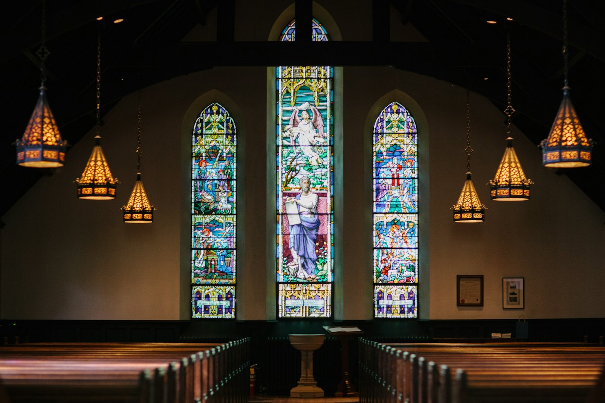
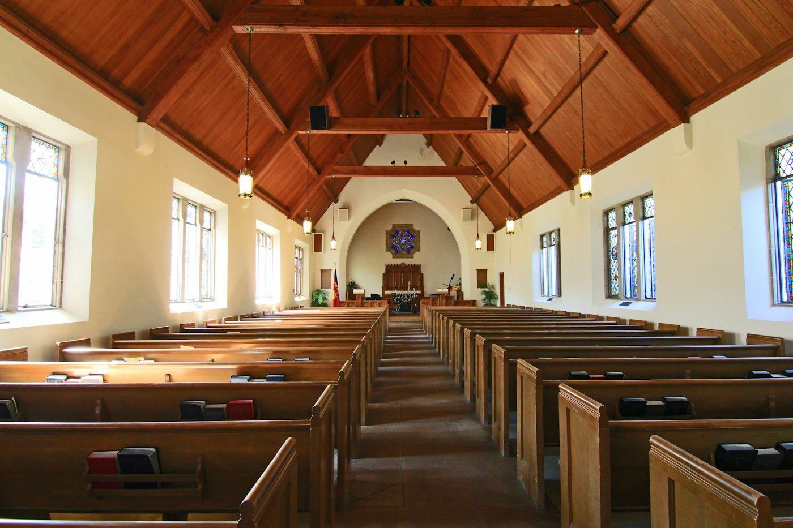
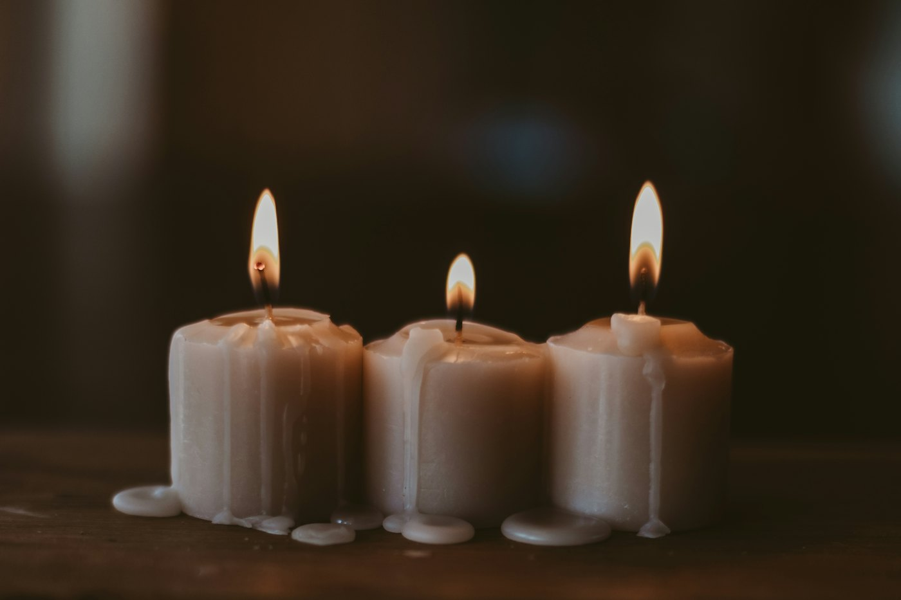
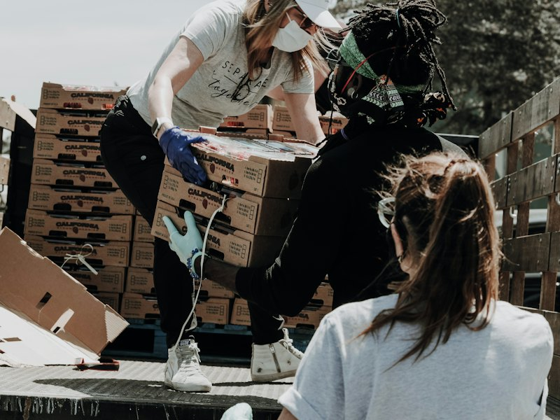
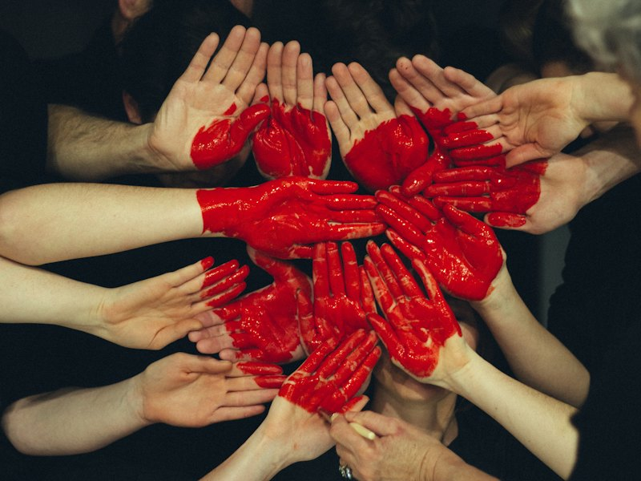
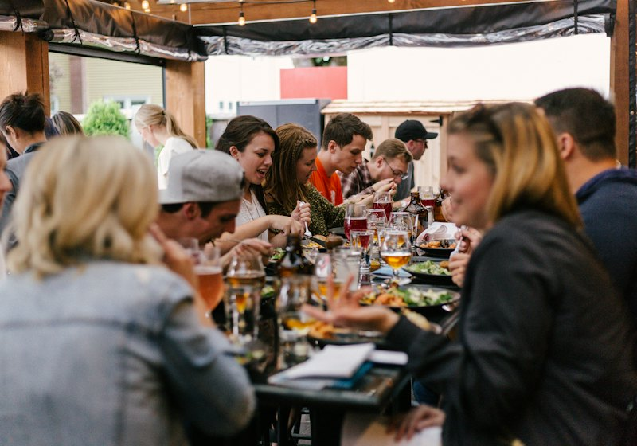
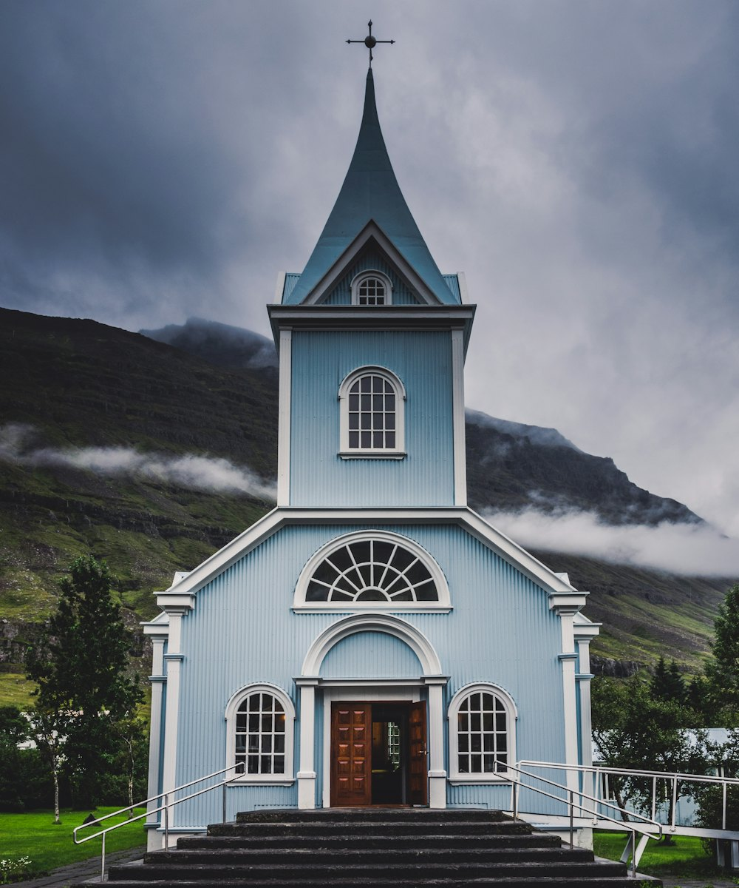

Kids & Youth
Sunday school during both services; youth group Fridays with pizza, honest questions, and an annual summer camp.
Father · Son · Holy Spirit
An old stone church with an open door —
candlelight, choral music, and a table with room for you.
Sundays 9:00 & 11:00 · Candlelight Evensong Wednesdays 6:30

Welcome
Lumen Chapel began in 1962 as a fieldstone chapel on a hill at the edge of town — a place where the lamps stayed lit for anyone walking home late. The town has grown up around us, but the practice hasn't changed: the door is unlocked, the candles are lit, and the kettle is usually on.
We're a congregation of a few hundred neighbors — carpenters and nurses, students and retirees, lifelong believers and people who slipped into the back pew last month and stayed. You don't need to have it figured out to belong here.
“Whoever you are, whatever you're carrying — come sit in the light awhile.”

Worship with us
A quiet, traditional liturgy — organ, chancel choir, and communion open to all.
A lively all-ages hour with our worship band, children's church, and a lot of joyful noise.
Ancient prayers sung by candlelight — thirty minutes of stillness in the middle of the week.
Nursery care at both Sunday services · Every service streamed live

“The light shines in the darkness, and the darkness has not overcome it.”
Life together
Faith is lived out around tables, in kitchens, and on Saturday-morning loading docks. There's a way in for everyone.
Sunday school during both services; youth group Fridays with pizza, honest questions, and an annual summer camp.
Chancel choir, a handbell ensemble, and the 1,200-pipe Casavant organ that has led our singing since 1974.

Groceries for eighty neighbor families every Saturday morning — no forms, no questions, just full bags.
Scripture, supper, and honest conversation around kitchen tables across the city, most weeknights.
A prayer chain, hospital visits, and a meal train for seasons of joy and seasons of grief alike.

Long partnerships from our own block to a sister parish in Guatemala — hands, funds, and friendship.
This season
Bring every creature, feathered or furred, for a blessing in honor of St. Francis.

One long table down the middle of the church, and everyone eats free.
Lessons & carols in the early evening; midnight mass by candlelight.
Recent sermons
Listen wherever you get your podcasts.

Plan a visit
1 Chapel Hill Lane
Hartsdale — on the hill
above the old mill pond
hello@lumenchapel.org
(555) 014‑1962